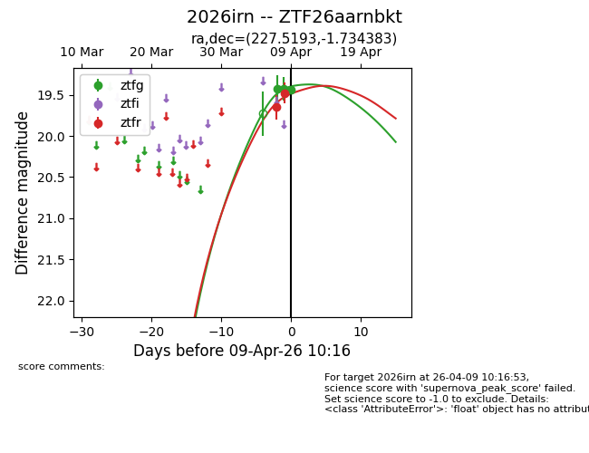
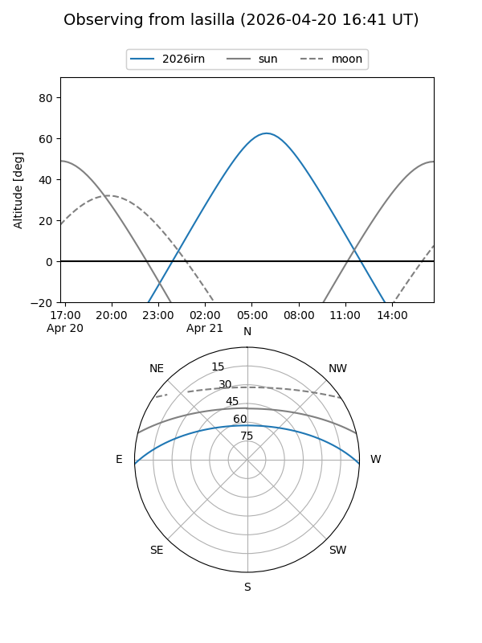
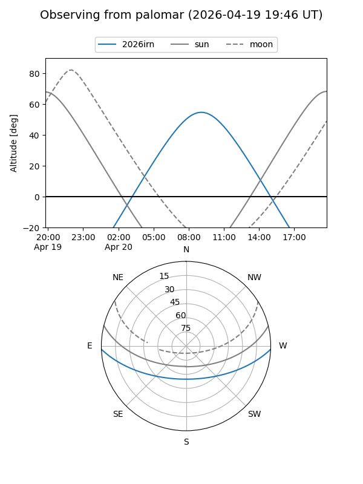
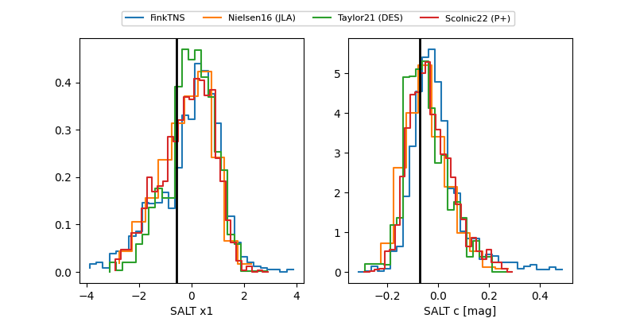

2026irn
Target 2026irn at 2026-04-09 10:21
Aliases and brokers:
FINK: link
Lasair: link
ALeRCE: link
TNS: link
YSE: link
alt names
ZTF26aarnbkt (ztf,fink_ztf)
2026irn (tns,yse)
Coordinates:
equatorial (ra, dec) = 227.5193,-1.73438
equatorial (HMS+DMS) = 15:10:04.64,-01:44:03.78
galactic (l, b) = (357.6755,+45.88278)
Flags:
Photometry:
last ztfg=19.44, ztfr=19.48
3 ztfg, 2 ztfr detections
Lightcurve

Visibility


Additional plots
